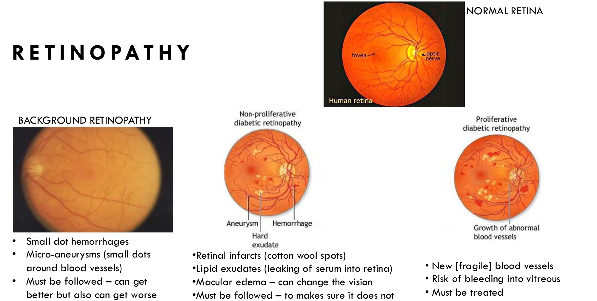
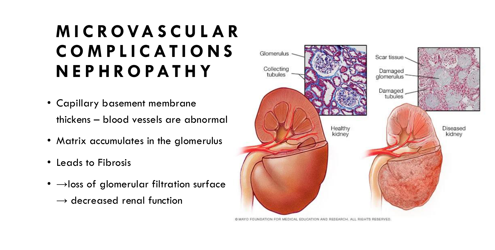
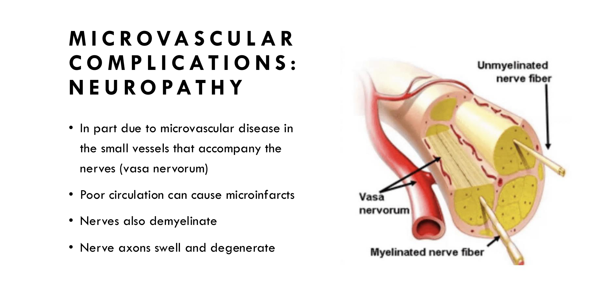
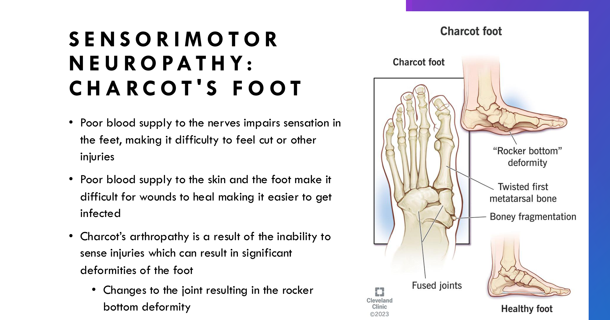

Acute & Chronic Complications of Diabetes
Learning Objectives
- Describe the clinical and biochemical markers for DKA and HHS, including commonalities and differences.
- Identify risk factors and precipitants for DKA and HHS, including social determinants of health.
- Summarize the steps in providing acute/emergent care for DKA and HHS.
- Outline prevention strategies for DKA and HHS.
- Identify the major body systems affected by chronic diabetes complications, and a clinically useful categorization of them.
- Investigate the pathophysiologic pathways leading to chronic diabetes complications.
DKA vs. HHS: Who Gets What
| DKA | HHS | |
|---|---|---|
| Typical patient | Younger, T1DM (absolute insulin deficiency) | Older, T2DM (relative insulin deficiency) |
| Onset | Acute — hours, not days | Over several days |
| Why no ketosis in HHS? | — | Enough insulin remains to suppress lipolysis/ketone formation, just not enough to prevent hyperglycemia |
Age isn't a perfect discriminator — people with T1DM are living longer, so DKA can occur in older patients too.
Shared precipitants
- Dehydrating illness (gastroenteritis, flu)
- Physically stressful illness: sepsis, MI, stroke, surgery, thyrotoxicosis, trauma
- Inability to access medications (rationing insulin, missed doses — often financial)
- Medications: steroids (worsen insulin resistance), SGLT2 inhibitors, cocaine
- DKA-specific: insulin withheld intentionally (e.g. for weight control)
DKA: Presentation & Labs
- History: polyuria, polydipsia, weight loss, nausea/vomiting, abdominal pain; can progress to lethargy, obtundation, coma if untreated
- Feared complication: cerebral edema/seizures — more common in children
- Exam: appears (often very) ill; ↓BP, ↑HR; dry mucous membranes, poor skin turgor (dehydration); breath may smell of acetone; Kussmaul breathing (hyperventilation compensating for the acidosis)
| Lab | Finding |
|---|---|
| Glucose | High (often >15 mmol/L) — but doesn't have to be |
| Serum & urine ketones | Elevated (acetone, beta-hydroxybutyrate, acetoacetate) |
| Anion gap | Elevated [Na − (Cl + HCO3)] — tracked to confirm the acidosis is resolving with treatment |
| Bicarbonate & pH | Low (acidotic) — bicarb is being consumed buffering the acid; pH might be ~7.01 vs. normal 7.4 |
| Plasma osmolality | Mildly high (from the elevated glucose and sodium) |
| Creatinine | May be high (dehydration) |
HHS: Presentation & Labs
- History: polyuria, polydipsia; lethargy progressing to obtundation (coma is rare); no abdominal pain or vomiting (a key difference from DKA)
- Exam: appears ill; ↓BP; dry mucous membranes, low skin turgor; no hyperventilation, no acetone breath
| Lab | Finding |
|---|---|
| Glucose | High, sometimes very high |
| Creatinine | Elevated (dehydration) |
| Sodium | May be low, from the high glucose |
| Potassium | More likely normal (no acidosis) — can be high if renal failure from dehydration is also present |
| Anion gap, pH, bicarbonate | Normal or only slightly abnormal |
| Serum osmolality | Very high |
Comparing DKA & HHS
| DKA | HHS | |
|---|---|---|
| pH | ≤ 7.3 | > 7.3 |
| Plasma glucose | > 15 mmol/L | > 30 mmol/L |
| Serum bicarbonate | < 18 mEq/L | > 15 mEq/L |
| Plasma/urine ketones | Positive | Negative or trace |
| Anion gap | > 12 | < 12 |
| Serum osmolarity | Variable | > 320 mOsm/kg (high) |
| Water deficit | ~6 L | ~9 L |
Sodium & Potassium Pearls
Sodium: it's usually falsely low
High glucose pulls water into the vascular space, diluting sodium — so the measured (lab-reported) sodium can look low even when a patient's true sodium/water balance is fine or even high. Always correct sodium for the glucose before interpreting it.
Potassium: normal-looking serum level ≠ normal total-body potassium
Patients can be significantly whole-body depleted of potassium even when the initial serum K looks normal (or even high) — this is most pronounced in DKA. Insulin normally drives K into cells; without it, K shifts out of cells (extracellularly), masking the true deficit on a serum draw.
Once you start treating with insulin, that shift reverses — K moves back into cells and the serum level can fall sharply. Low K can cause life-threatening cardiac arrhythmias, so it must be monitored closely and replaced via IV as needed.
Treatment of DKA & HHS
The approach is essentially the same for both:
- ABCs (airway, breathing, circulation)
- Fluids: normal saline — often many litres, given the degree of dehydration
- IV insulin: always in DKA, almost always in HHS
Monitor every 1–2 hours: level of consciousness; sodium/potassium/pH; glucose (hourly while on the insulin drip, usually point-of-care); volume status/heart failure risk (especially in the elderly).
Once BG falls to ~12–14 mmol/L, add dextrose to the IV fluid (D5W with NS) — this lets the insulin infusion continue (needed to fully resolve the acidosis/normalize the anion gap) without causing hypoglycemia.
Preventing DKA & HHS
| T1DM sick-day rules | T2DM sick-day rules |
|---|---|
| Continue at least some insulin even when not eating (usually a lower basal dose) | Frequent monitoring when ill |
| Frequent BG and urine ketone checks when ill | Stop dehydrating medications during GI upset (SGLT2 inhibitors, diuretics, metformin) |
Illness itself can raise blood glucose — taking insulin during sick days is safe (and usually necessary), even with reduced oral intake.
Not every case is preventable (a sudden vomiting illness can still land someone in the ER) — but common, addressable themes behind DKA/HHS include: withholding insulin to control weight, withholding medications due to financial constraints, uncertainty about what to do on sick days, new steroid prescriptions, and major body stresses (infection, MI, stroke). Always ask why.
Chronic Complications: The Framework
Patients are usually well aware of these risks already — complications shouldn't be used as a scare tactic for "compliance," and even excellent DM management doesn't guarantee they won't happen.
Many organ systems can be affected — eyes, kidneys, heart, brain, nerves, feet — but they sort cleanly into three buckets:
| Category | Includes |
|---|---|
| Microvascular | Retinopathy, nephropathy, neuropathy |
| Macrovascular | Myocardial infarction, stroke, peripheral vascular disease |
| Other | Cataracts, glaucoma |
Retinopathy
Three clinically meaningful stages:
| Stage | Significance |
|---|---|
| Background | Not vision-threatening; can improve or worsen over time with BG control |
| Pre-proliferative | Not likely vision-threatening yet, but may advance |
| Proliferative | Can threaten vision — must be treated |

- Background: small dot hemorrhages; microaneurysms (small dots around vessels)
- Pre-proliferative: retinal infarcts (cotton wool spots); lipid exudates (serum leaking into the retina); macular edema (can change vision)
- Proliferative: new fragile blood vessels; risk of bleeding into the vitreous — must be treated
Nephropathy
The kidney is a highly vascular structure, so it's a natural target:

Capillary basement membrane thickens → matrix accumulates in the glomerulus → fibrosis → loss of glomerular filtration surface → decreased renal function.
Neuropathy
Driven in part by microvascular disease in the small vessels that supply the nerves themselves (the vasa nervorum) — poor circulation causes microinfarcts, and nerves demyelinate with axons swelling and degenerating.

| Type | Detail |
|---|---|
| Peripheral sensorimotor | Most common. Glove-and-stocking distribution (hands are rarely affected in their entirety) |
| Autonomic | e.g. gastroparesis, erectile dysfunction |
| Cranial | CN III palsy is most common; also Bell's palsy |
| Amyotrophy | — |
Sensorimotor neuropathy & Charcot's foot
Most commonly presents as numb, tingling, itchy feet — often progressive over years and severe enough to disturb sleep. Loss of protective sensation puts the foot at risk for ulcers, infection, amputation, and Charcot's foot.

- Poor blood supply to nerves → impaired sensation → injuries go unnoticed
- Poor blood supply to skin → wounds heal poorly → easier to get infected
- Charcot's arthropathy: inability to sense injury → significant foot deformity, including the rocker-bottom deformity
Macrovascular & Other Complications
| Macrovascular | Other |
|---|---|
| Myocardial infarction | Cataracts |
| Stroke | Glaucoma |
| Peripheral vascular disease (toe/foot/leg amputation) |
Why Do Complications Happen?
There's no single cause — understanding the mechanisms matters because it opens multiple avenues for prevention (and drug development).
- Direct glucose toxicity to blood vessels and nerves
- Oxidative stress and free radical generation
- Increased intracellular sorbitol → cells swell osmotically → cell injury
- ↑ VEGF → abnormal angiogenesis
- Hypertension — direct vascular damage
- Hyperlipidemia — contributes to atherosclerotic plaques
- Protein glycation — glucose incorporated into protein structure impairs normal function
- Inflammation (especially in T2DM) & a hypercoagulable state — both promote thrombotic events
Adapted (not reproduced verbatim) from Dr. Aisha Yusuf Ibrahim (Endocrinology & Metabolism), "Acute and Chronic Complications of Diabetes" lecture slides (contributions: Dr. Ruth McManus), Schulich School of Medicine & Dentistry, plus lecture notes.